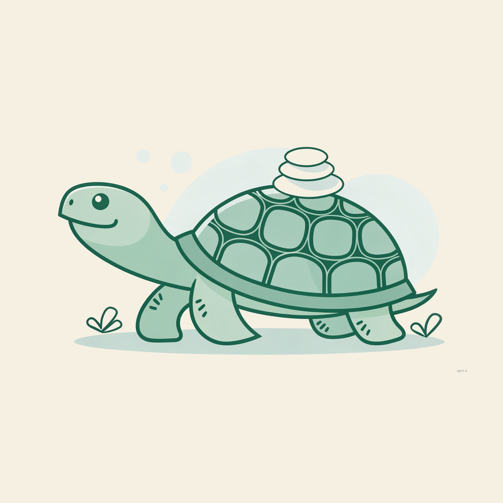
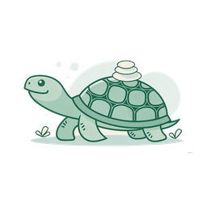

Sagely
A calm to-do app for days you can't be a productivity person.
No streaks. No scoreboards. Past-due is "Carried over," not "Late." Progress shows up as ambient pebbles in a cairn, never a counter that resets when life happens.

A small studio making software that doesn't punish you on days you can't be a productivity person.

Most productivity apps assume you want to optimize. Streaks. Scoreboards. "You missed your goal" notifications. If that's the right energy for you, those apps work.
For everyone else — anxiety, procrastination, low stress tolerance, negative self-talk — those same systems make a hard day worse. Technology For Humanity builds tools that move things forward without making the day feel like a test you're failing.